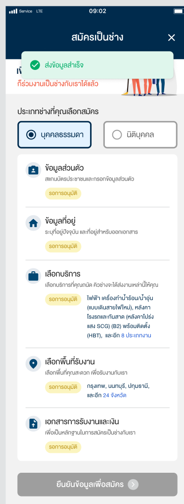

02 / TECHNICIAN EXPERIENCE
Buddy App 2.0
สมัครตามความพร้อม พักแล้วกลับมาทำต่อได้
ปรับ Onboarding ฝั่งช่างจากการกรอกทั้งหมดในครั้งเดียว เป็นส่วนที่เลือกทำและกลับมาทำต่อได้ พร้อมรายละเอียดงานและกรอบการเรียนรู้เบื้องต้น
- Role
- UX/UI Design
- Scope
- Onboarding · Service selection
- Team
- Home ทำร่วมกับ Designer อีก 2 คน
- Evidence
- Usability test · ก่อนเปิดใช้แอป

หน้าภาพรวมสมัครเป็นช่าง — ตัวอย่างสถานะรอการอนุมัติ
01 / TECHNICIAN EXPERIENCE
ช่างท้อ ก่อนสมัครเสร็จ
แอปเดิมให้กรอกข้อมูลทั้งหมดในคราวเดียวและบันทึกเมื่อเสร็จ เป้าหมายหลักของการปรับครั้งนี้คือเปิดทางให้ผู้สมัครที่ท้อหรือยังไม่พร้อมสามารถกลับมาทำต่อได้
เอกสารบางอย่างอาจยังไม่อยู่กับตัว ข้อมูลบางเรื่องยังให้ไม่ได้ครบ ทีมคำนึงถึงการสมัครหลังเลิกงานที่ช่างเหนื่อยล้า จึงแบ่งภาระออกเป็นส่วน
ความเหนื่อยหลังเลิกงานเป็นบริบทที่ทีมคำนึงถึง ไม่ได้ระบุว่าเป็นผลวิจัยที่วัดโดยตรง เป้าหมายคือแก้ drop-off แต่ยังไม่มีผลหลังเปิดใช้จริง
02 / TECHNICIAN EXPERIENCE
ทำเท่าที่พร้อม แล้วกลับมาทำต่อ
แบ่งการสมัครเป็น 5 ส่วน ผู้สมัครเลือกทำแยกกันตามความพร้อมและออกจากแอปแล้วกลับมาทำต่อได้ หน้าภาพรวมสรุปข้อมูลและสถานะของแต่ละส่วน
| ส่วน | สิ่งที่ต้องเตรียม |
|---|---|
| ข้อมูลส่วนตัว | บัตรประชาชนและข้อมูลส่วนตัว |
| ข้อมูลที่อยู่ | ที่อยู่ปัจจุบันและที่อยู่สำหรับออกเอกสาร |
| เลือกบริการ | งานที่ต้องการรับ |
| เลือกพื้นที่รับงาน | พื้นที่ที่สะดวกรับงาน |
| เอกสารการรับงานและเงิน | หลักฐานประกอบการสมัคร |
ในแบบมีทั้ง “ใส่ข้อมูลแล้ว” และ “ยังใส่ข้อมูลไม่ครบ” ส่วนภาพนี้แสดง “รอการอนุมัติ” จึงต้องแยกความคืบหน้าการกรอกออกจากสถานะตรวจอนุมัติ
03 / TECHNICIAN EXPERIENCE
ผู้ทดสอบเห็นคุณค่าของการค่อย ๆ ทำ
“แบบนี้ดีกว่าตอนพี่สมัคร ค่อย ๆ กลับมาทำได้ ไม่งั้นกรอกที 20 อย่าง ไม่รู้จะเสร็จเมื่อไร”
ฟีดแบ็กนี้สะท้อนว่าผู้ทดสอบรับรู้คุณค่าของการทยอยทำและกลับมาทำต่อ เมื่อเทียบกับประสบการณ์สมัครเดิมของตนเอง
คำพูดเล่าจากความทรงจำและปรับสะกดให้อ่านง่าย ไม่ใช่การถอดเสียงโดยตรง “20 อย่าง” เป็นคำของผู้ทดสอบ ไม่ใช่จำนวนฟิลด์ที่ตรวจนับ ผู้ทำงานออกจากทีมก่อนปล่อยแอป จึงไม่มีข้อมูลยืนยันว่า drop-off ลดลงจริง
04 / TECHNICIAN EXPERIENCE
รู้ค่าจ้างและขอบเขตก่อนเลือกงาน
แยกรายการงานพร้อมค่าจ้างและหน่วยคิดราคา เช่น ต่อจุด พร้อมอุปกรณ์ที่ต้องเตรียม มาตรฐานการทำงาน และเงื่อนไขใบรับรองของบางบริการ
ส่วนนี้เล่าตามสิ่งที่ออกแบบและภาพที่มี ผู้ทำงานจำเรื่องเบื้องหลังได้ไม่ครบ จึงไม่เติมปัญหาเดิมหรือผลลัพธ์ทางธุรกิจ
05 / TECHNICIAN EXPERIENCE
กรอบการเรียนรู้สำหรับฝ่ายพัฒนาช่าง
เตรียมโครงสร้างหน้าบทเรียนและแบบทดสอบเบื้องต้นไว้ให้ฝ่ายพัฒนาช่างนำไปใช้ก่อนอบรม มีทั้ง Q-CHANG 101 และส่วนตามบริการที่ผู้สมัครเลือก
- รายการบทเรียนและแบบทดสอบ แยกส่วนกลางกับส่วนเฉพาะงาน
- สถานะรายชุดและความคืบหน้าระหว่างทำ
- แบบที่ตอบผิดแล้วเลือกใหม่ และตัวเลือกยืนยันก่อนส่ง
ขอบเขตงานคือการออกแบบกรอบให้ฝ่ายที่รับผิดชอบนำไปใช้ต่อ ยังไม่มีข้อมูลยืนยันการนำไปใช้จริง หน้า Figma มีหลาย draft และ option จึงไม่รวมทุกหน้าว่าเป็น flow สุดท้ายเดียวกัน